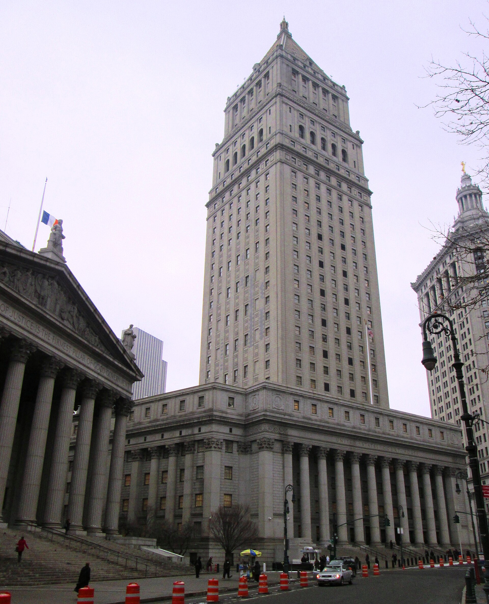

Political Science Pathways

Graduate school and law school for Queens College political science majors: what to do each year, how to do it, and the 229 programs to apply to.
Start with your yearThe next deadline is in the path below.
Pick where you're headed, then find your year: what to do, how to do it, and what to apply to.


Every program links to its official page. Deadlines are checked every week; last updated October 16, 2026.
Not sure where to start?
Eight quick questions. There are no wrong answers, and "not sure" is a fine answer. You'll get the path that fits you best, a second one worth a look, and a fact about each.
The quiz needs JavaScript. Try Graduate school or Law school instead.
The year-by-year path needs JavaScript. Open the graduate school page or the law school page.
Made by a student,
for students

Why this exists
Hello! I made this site because, as an undergrad, I didn't know about all the opportunities I had. It's based on my own experience, so it won't match everyone's. Questions or comments? Email me at mohamed.aljahmi@qc.cuny.edu. I'm always happy to help and can point you to the right resources on campus.
Mohamed Aljahmi
Not an official page
This guide is student-made, not a Queens College or CUNY publication. Dates change every year, so confirm each one on the program's official page before you apply.